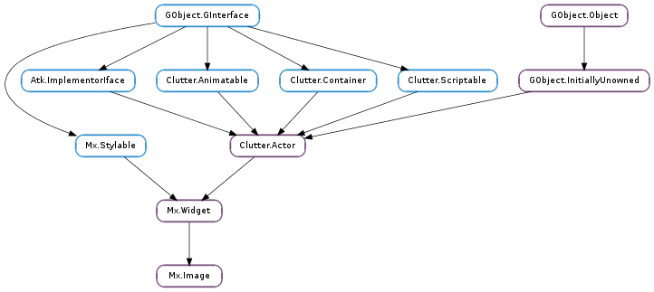

| static | new() |
| animate_scale_mode(mode, duration, scale_mode) | |
| clear() | |
| get_allow_upscale() | |
| get_image_rotation() | |
| get_load_async() | |
| get_scale_height_threshold() | |
| get_scale_mode() | |
| get_scale_width_threshold() | |
| get_transition_duration() | |
| set_allow_upscale(allow) | |
| set_from_buffer(buffer, buffer_size, buffer_free_func) | |
| set_from_buffer_at_size(buffer, buffer_size, buffer_free_func, width, height) | |
| set_from_cogl_texture(texture) | |
| set_from_data(data, pixel_format, width, height, rowstride) | |
| set_from_file(filename) | |
| set_from_file_at_size(filename, width, height) | |
| set_image_rotation(rotation) | |
| set_load_async(load_async) | |
| set_scale_height_threshold(pixels) | |
| set_scale_mode(mode) | |
| set_scale_width_threshold(pixels) | |
| set_transition_duration(duration) |
| Name | Type | Flags | Description |
|---|---|---|---|
| allow-upscale | bool | r/w | Allow images to be up-scaled |
| image-rotation | float | r/w | Image rotation in degrees |
| load-async | bool | r/w | Whether to load images asynchronously |
| scale-height-threshold | int | r/w | Amount of pixels difference allowed between requested height and image height |
| scale-mode | Mx.ImageScaleMode | r/w | The scaling mode for the images |
| scale-width-threshold | int | r/w | Amount of pixels difference allowed between requested width and image width |
| transition-duration | int | r/w | Transition duration in ms |
| Name | Parameters | Return | Description |
|---|---|---|---|
| image-load-error | GLib.Error | Emitted when an asynchronous image load has encountered an error and cannot load the requested image. | |
| image-loaded | Emitted when an asynchronous image load has completed successfully |
Bases: Mx.Widget
The contents of this structure are private and should only be accessed through the public API.
| Returns: | A newly created Mx.Image object |
|---|---|
| Return type: | Clutter.Actor |
Creates a new Mx.Image object.
| Parameters: |
|
|---|
Sets the value of Mx.Image :scale-mode to scale_mode and animates the scale factor of the image between the previous value and the new value.
| Returns: | static void |
|---|
Clear the current image and set a blank, transparent image.
| Returns: | True if upscaling is allowed, False otherwise |
|---|---|
| Return type: | bool |
Determines whether image up-scaling is allowed.
| Returns: | The value of the image-rotation property. |
|---|---|
| Return type: | float |
Get the value of the Mx.Image :image-rotation property.
| Returns: | True if images are set to load asynchronously, False otherwise |
|---|---|
| Return type: | bool |
Determines whether asynchronous image loading is in use.
| Returns: | The height scaling threshold, in pixels |
|---|---|
| Return type: | int |
Retrieves the height scaling threshold.
| Returns: | The current Mx.ImageScaleMode |
|---|---|
| Return type: | Mx.ImageScaleMode |
Get the current scale mode of Mx.Image.
| Returns: | The width scaling threshold, in pixels |
|---|---|
| Return type: | int |
Retrieves the width scaling threshold.
| Returns: | The value of the transition-duration property. |
|---|---|
| Return type: | int |
Get the value of the Mx.Image :transition-duration property.
| Parameters: | allow (bool) – True to allow upscaling, False otherwise |
|---|
Sets whether up-scaling of images is allowed. If set to True and a size larger than the image is requested, the image will be up-scaled in software.
The advantage of this is that software up-scaling is potentially higher quality, but it comes at the expense of video memory.
| Parameters: |
|
|---|---|
| Raises: | |
| Returns: | True if the image was successfully updated |
| Return type: |
Set the image data from unencoded image data, stored in memory. In case of failure, False is returned and error is set. It is expected that buffer will remain accessible for the duration of the load. Once it is finished with, buffer_free_func will be called.
| Parameters: | |
|---|---|
| Raises: | |
| Returns: | True if the image was successfully updated |
| Return type: |
Set the image data from unencoded image data, stored in memory, and scales it while loading. In case of failure, False is returned and error is set. It is expected that buffer will remain accessible for the duration of the load. Once it is finished with, buffer_free_func will be called. The aspect ratio will always be maintained.
| Parameters: | texture (object) – A Cogl.Handle to a texture |
|---|---|
| Returns: | True on success, False on failure |
| Return type: | bool |
Sets the contents of the image from the given Cogl texture.
| Parameters: |
|
|---|---|
| Raises: | |
| Returns: | True if the image was successfully updated |
| Return type: |
Set the image data from a buffer. In case of failure, False is returned and error is set.
| Parameters: | filename (str) – Filename to read the file from |
|---|---|
| Raises: | GLib.GError |
| Returns: | True if the image was successfully updated |
| Return type: | bool |
Set the image data from an image file. In case of failure, False is returned and error is set.
| Parameters: | |
|---|---|
| Raises: | |
| Returns: | True if the image was successfully updated |
| Return type: |
Set the image data from an image file, and scale the image during loading. In case of failure, False is returned and error is set. The aspect ratio will always be maintained.
| Parameters: | rotation (float) – Rotation angle in degrees |
|---|
Set the Mx.Image :image-rotation property.
| Parameters: | load_async (bool) – True to load images asynchronously |
|---|
Sets whether to load images asynchronously. Asynchronous image loading requires thread support (see g_thread_init()).
When using asynchronous image loading, all image-loading functions will return immediately as successful. The Mx.Image ::image-loaded and Mx.Image ::image-load-error signals are used to signal success or failure of asynchronous image loading.
| Parameters: | pixels (int) – Number of pixels |
|---|
Sets the threshold used to determine whether to scale the height of the image. If a specific height is requested, the image height is allowed to differ by this amount before scaling is employed.
This can be useful to avoid excessive CPU usage when the image differs only slightly to the desired size.
| Parameters: | mode (Mx.ImageScaleMode) – The Mx.ImageScaleMode to set |
|---|
Set the scale mode on Mx.Image
| Parameters: | pixels (int) – Number of pixels |
|---|
Sets the threshold used to determine whether to scale the width of the image. If a specific width is requested, the image width is allowed to differ by this amount before scaling is employed.
This can be useful to avoid excessive CPU usage when the image differs only slightly to the desired size.
| Parameters: | duration (int) – Transition duration in milliseconds |
|---|
Set the Mx.Image :transition-duration property.